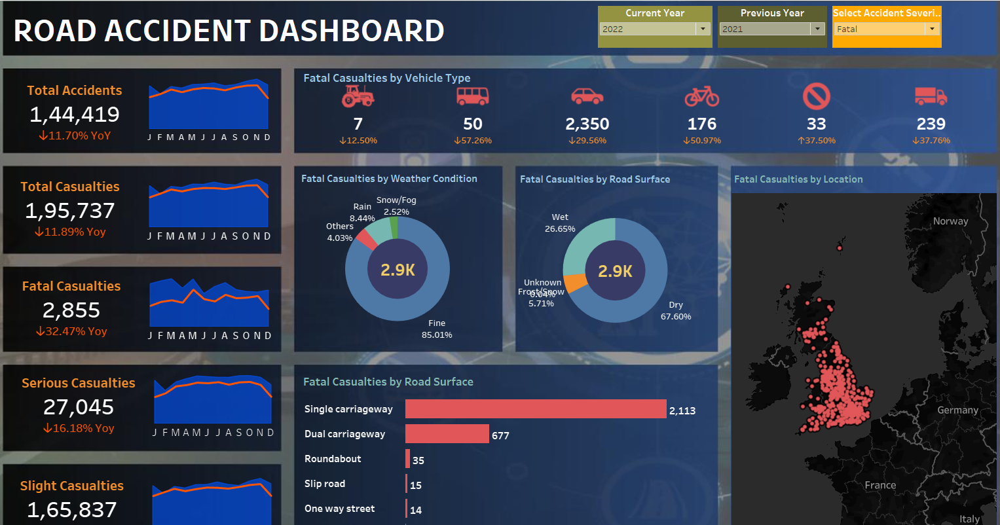
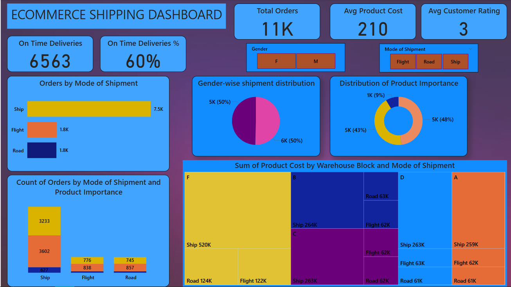

Road Accidents Tableau Dashboard

• Identified critical risk patterns in road safety by revealing that most fatalities occurred on dry roads and single carriageways, challenging common assumptions about weather-related accidents.
• Achieved a 51% reduction in cyclist fatalities year-over-year, highlighting significant improvements in urban planning and road-sharing awareness.
• Designed an interactive Tableau dashboard that visualizes trends by location, time, road type, and casualty class—enabling data-driven decision-making for traffic policy and public safety.
View Project
Excel Sales Analysis Dashboard

• Developed a comprehensive Excel dashboard analyzing 3+ years of coffee sales data across 4 bean varieties with interactive filtering capabilities by order date, roast type, loyalty status, and package size.
• Created dynamic time-series visualizations revealing seasonal sales patterns, with peak revenue periods showing up to $800+ in daily sales, enabling data-driven inventory and marketing decisions.
• Built geographic sales analysis identifying 79% of revenue from the US market, with secondary markets in Ireland and UK informing international expansion strategy.
View Project
ChatGPT vs Deepseek AI Model

• Analyzed 10,000+ AI interactions using SQL queries, revealing DeepSeek-Chat 1.5 achieved higher accuracy ratings than GPT-4-turbo for enterprise AI implementation.
• Executed device-specific SQL aggregation queries identifying smart speakers delivered 4.7% faster response times (2.25s) compared to other devices, enabling targeted optimization strategies.
• Performed time-series SQL analysis uncovering a 57% increase in monthly churn rate (3.1% to 4.86%), directly informing data-driven customer retention initiatives.
View Article
Blinkit Sales Analysis Dashboard

• Developed an interactive Power BI dashboard analyzing 10,000+ sales transactions, identified key sales trends and user behavior patterns.
• Performed data cleaning by handling missing values, duplicates, and inconsistencies to ensure accurate reporting.
• Created dynamic visualizations for revenue trends, peak sales periods, and product performance.
View Project
LinkedIn Job Data Analysis

• Scraped and analyzed 500+ job postings using Python libraries like BeautifulSoup and Pandas.
• Conducted EDA on 200+ job roles to identify top in-demand skills and hiring trends.
• Generated actionable insights to help job seekers align their profiles with market demand.
View Project
Ecommerce Shipping Analysis Dashboard

• Despite handling 11,000 total orders with an average product cost of $210, only 60% of deliveries (6,563) are arriving on time, indicating a significant opportunity to improve delivery performance and potentially increase the low customer rating of 3.
• Ship mode dominates transportation with 7,500 orders (68% of total volume), while Flight and Road modes each handle only 1,800 orders (16% each), suggesting a strategic review of transportation allocation could optimize efficiency.
• Warehouse F generates the highest product cost value at $520K via Ship mode alone, representing approximately 24% of the total shipping value across all warehouse blocks, making it the most critical fulfillment center for high-value merchandise.
View Project